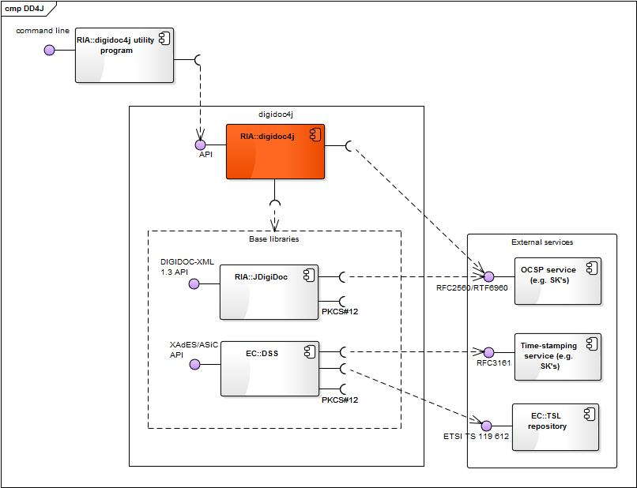

digidoc4j is a library for integrating digital signatures (XAdES/ASiC based) into applications and services built with Java technology.
The development of digidoc4j is organized by Estonian Information System Authority and executed by several companies, including AS Sertifitseerimiskeskus and CGI Eesti AS. For inquiries about participating in the development please e-mail eid at ria.ee
This document provides the following information on digidoc4j:
- Supported functionality
- Architecture
- API overview
- Utility program overview
This section gives overview of the main functional features offered by digidoc4j. For more detailed information about the functions (including functionality that is planned for later releases), see the digidoc4j project's Pivotal Tracker.
The digidoc4j utility program digidoc4j-util*.jar can be used for testing a subset of the supported functionality, the program is accessible from the digidoc4j download area.
digidoc4j enables handling signature containers compliant to ETSI TS 102 918 standard called Associated Signature Containers (ASiC). By default, the digidoc4j implementation uses containers in BDOC 2.1 format, which is a subset of ASiC standard.
Note: additionally, an older DIGIDOC-XML 1.3 container format is supported via JDigiDoc base library.
The main use cases regarding signature containers are:
See also: {@link org.digidoc4j.ContainerBuilder org.digidoc4j.ContainerBuilder} and {@link org.digidoc4j.Container}
digidoc4j enables handling digital signatures based on ETSI TS 101 903 standard called XML Advanced Electronic Signatures (XAdES). By default, the digidoc4j implementation uses signatures in BDOC 2.1 format, which is a subset of XAdES standard.
Note: additionally, an older XAdES-based DIGIDOC-XML 1.3 signature format is supported via JDigiDoc base library.
The main use cases regarding digital signatures are:
* There are two XAdES-LT level compliant signature profiles supported:
See also: {@link org.digidoc4j.SignatureBuilder org.digidoc4j.SignatureBuilder}, {@link org.digidoc4j.Signature Signature}, {@link org.digidoc4j.ContainerBuilder ContainerBuilder} and {@link org.digidoc4j.Container Container}
The signature validation process is based on ETSI TS 102 853 standard called Signature validation procedures and policies.
The main use cases regarding validation are:
See also: {@link org.digidoc4j.SignatureValidationResult org.digidoc4j.ValidationResult}
TSL (Trust Service status List) list is a signed XML document that provides information about the status of trust services. The format is based on ETSI 119 612 standard.
digidoc4j uses TSL lists for checking the trustworthiness of the certificates that are used in the signature. The European Commission's TSL list is used as the List Of Trusted List (LOTL) (accessible from: https://ec.europa.eu/tools/lotl/eu-lotl.xml).
The main use case regarding TSL lists usage is:
See also: {@link org.digidoc4j.SignatureToken org.digidoc4j.SignatureToken}, {@link org.digidoc4j.signers.PKCS12SignatureToken org.digidoc4j.signers.PKCS12SignatureToken} and {@link org.digidoc4j.signers.PKCS11SignatureToken org.digidoc4j.signers.PKCS11SignatureToken}

The component diagram above depicts the high level components of digidoc4j library, their internal and external interfaces.
The components in the diagram are divided into notional packages according to their owner:
The components are further described in the following table:
| Component | Description | Owner |
|---|---|---|
| digidoc4j | Open source software library for integrating digital signatures (XAdES/ASiC based) into applications and services built with Java technology.
|
RIA |
| digidoc4j utility program | Small command line application that enables accessing the main functionality of digidoc4j library via a command line interface. Used for testing purposes. Can also be used as a source for sample client code for using digidoc4j API. Can be downloaded from digidoc4j download area.
|
RIA |
| JDigiDoc | Open source Java software library that enables handling documents in BDOC 2.1 and DIGIDOC-XML 1.3 formats and encryption/decryption in ENCDOC-XML 1.0 (CDOC) format. See also:
|
RIA |
| DSS | Digital Signature Service - open source Java framework created in order to assist EU Member States with the implementation of the Decision 2011/130/EU. Supports several forms AdES digital signatures and ASiC signature containers. See also:
|
European Commission |
| TSL repository | Repository for the European Commission's central TSL list with links to the locations where the trusted lists are published as notified by EU Member States, accessible from https://ec.europa.eu/tools/lotl/eu-lotl.xml.
|
European Commission |
| OCSP service | RFC2560/RTF6960 based OCSP service. Also offered by SK for Estonian and a number of foreign certificates.
|
Any OCSP service provider |
| Time-stamping service | RFC3161-based time-stamping service. Also offered by SK.
|
Any time-stamping service provider |
The digidoc4j source code's compliance to Java development best practices is periodically checked with automated code review, executed with Checkstyle configuration file checkstyle.xml that is included in the digidoc4j source package.
The Checkstyle source code analyzer enables to ensure that the code has been written according to "Code conventions for the Java programming language" and has been documented according to JavaDoc best practices, described in "How to write doc comments for the JavaDoc tool".
In the following subsections, a sample BDOC 2.1 signature creation use case is implemented with digidoc4j API classes and methods.
It is possible switch between testing and production environment by using {@link org.digidoc4j.Configuration} class or digidoc4j.mode system property.
Default environment is production.
More detailed configuration can be modified in the digidoc4j.yaml file.
{@link org.digidoc4j.Configuration} configuration = new {@link org.digidoc4j.Configuration#Configuration Configuration}({@link org.digidoc4j.Configuration.Mode#TEST Configuration.Mode.TEST});
The example above creates a configuration with test environment for using test OCSP, Time Stamp etc servers. The same can
be achieved by setting the system property digidoc4j.mode with value "TEST".
It is a good idea to use only a single configuration object for all the containers so the operation times would be faster. For example, TSL is cached within a configuration object and TSL loading is a time consuming operation.
The default configuration object is a singelton, meaning that all the containers will use the same configuration object (unless specified otherwise). The default singelton configuration object can be accessed by {@link org.digidoc4j.Configuration} configuration = {@link org.digidoc4j.Configuration}.{@link org.digidoc4j.Configuration#getInstance() getInstance()};
{@link org.digidoc4j.Container Container} container = {@link org.digidoc4j.ContainerBuilder ContainerBuilder}.
{@link org.digidoc4j.ContainerBuilder#aContainer(String) aContainer}("BDOC"). // Supported types are BDOC, ASICE, ASICS and DDOC. Default is BDOC
{@link org.digidoc4j.ContainerBuilder#withConfiguration(Configuration) withConfiguration}(configuration). // {@link org.digidoc4j.Configuration} settings
{@link org.digidoc4j.ContainerBuilder#withDataFile(String, String) withDataFile}("testFiles/legal_contract_1.txt", "text/plain"). // Adding a document from a hard drive
{@link org.digidoc4j.ContainerBuilder#withDataFile(InputStream, String, String) withDataFile}(inputStream, "legal_contract_2.txt", "text/plain"). // Adding a document from a stream
{@link org.digidoc4j.ContainerBuilder#build() build()};
You can use {@link org.digidoc4j.ContainerBuilder#aContainer() ContainerBuilder.aContainer()} to create a new container builder, populate the builder with data and finally call {@link org.digidoc4j.ContainerBuilder#build() build()} to create the container with the populated data.
In the example above, a container builder is used to create a BDOC container with specific configuration parameters and two data files: one from hard drive (legal_contract_1.txt) and other from input stream (legal_contract_2.txt).
{@link org.digidoc4j.ContainerBuilder#aContainer(String) ContainerBuilder.aContainer(String containerType)} can be used for creating a container of a particular type. Currently supported types are BDOC, ASiCE, ASiCS and DDOC. Default is BDOC 2.1 if no type is provided.
A data file can be added by reading it from the file system or from an input stream (needed if the data is already in memory, e.g. read from database). The following example shows the case when the file is read from file system:
containerBuilder.{@link org.digidoc4j.ContainerBuilder#withDataFile withDataFile}("<input_file_name_and_path>", "<mime_type>");
A created container can be written to the file system as follows:
container.{@link org.digidoc4j.Container#saveAsFile saveAsFile}("<output_file_name_and_path>");
An existing container can be read as follows:
{@link org.digidoc4j.Container Container} container = {@link org.digidoc4j.Container ContainerBuilder}.
{@link org.digidoc4j.ContainerBuilder#aContainer() aContainer()}.
{@link org.digidoc4j.ContainerBuilder#fromExistingFile fromExistingFile}("<input_file_name_and_path>").
{@link org.digidoc4j.ContainerBuilder#build() build()};
A signature can be added to the container by determining a class that implements communication with the signature token,
i.e. a subclass of {@link org.digidoc4j.SignatureToken SignatureToken}.
Currently, a PKCS#12 software token implementation is provided by digidoc4j in the
{@link org.digidoc4j.signers.PKCS12SignatureToken} class.
String privateKeyPath = "testFiles/signout.p12";
char[] password = "test".toCharArray();
{@link org.digidoc4j.signers.PKCS12SignatureToken} signatureToken = new {@link org.digidoc4j.signers.PKCS12SignatureToken#PKCS12SignatureToken PKCS12SignatureToken}(privateKeyPath, password);
In the sample above, the PKCS#12 token container's location and password is given as input parameters
to the {@link org.digidoc4j.signers.PKCS12SignatureToken} class. The private key is stored in the
"signout.p12" file and the password is "test".
Next we create a new signature with the signature token.
{@link org.digidoc4j.Signature} signature = {@link org.digidoc4j.SignatureBuilder}.
{@link org.digidoc4j.SignatureBuilder#aSignature aSignature}(container).
{@link org.digidoc4j.SignatureBuilder#withSignatureDigestAlgorithm withSignatureDigestAlgorithm}({@link org.digidoc4j.DigestAlgorithm DigestAlgorithm.SHA256}).
{@link org.digidoc4j.SignatureBuilder#withSignatureToken withSignatureToken}(signatureToken).
{@link org.digidoc4j.SignatureBuilder#invokeSigning invokeSigning()};
Finally we add the signature to the container. Signature must be added to the container otherwise the signature remains detached from the container.
container.{@link org.digidoc4j.Container#addSignature addSignature}(signature);
It is possible to sign the container externally. A typical use case would be signing in the Web using a browser plugin:
First we need to get the signer's certificate that is used in signing (via browser plugin for example).
{@link java.security.cert.X509Certificate} signingCert = getSignerCertSomewhere();
Then we need to get the SignedInfo data object to be signed externally.
{@link org.digidoc4j.DataToSign} dataToSign = {@link org.digidoc4j.SignatureBuilder}.
{@link org.digidoc4j.SignatureBuilder#aSignature aSignature}(container).
{@link org.digidoc4j.SignatureBuilder#withSigningCertificate withSigningCertificate}(signingCert).
{@link org.digidoc4j.SignatureBuilder#withSignatureDigestAlgorithm withSignatureDigestAlgorithm}({@link org.digidoc4j.DigestAlgorithm DigestAlgorithm.SHA256}).
{@link org.digidoc4j.SignatureBuilder#buildDataToSign buildDataToSign()};
Now we have a data that can be used for external signing. {@link org.digidoc4j.DataToSign} class contains {@link org.digidoc4j.DataToSign#getDataToSign} method for getting data to be signed. {@link org.digidoc4j.DataToSign#getDigestAlgorithm} method can be used for getting the digest algorithm to be used in the signing process.
byte[] data = dataToSign.{@link org.digidoc4j.DataToSign#getDataToSign getDataToSign()}; //Get the SignedInfo data that should be signed
byte[] signatureValue = signDataSomewhereRemotely(data, DigestAlgorithm.SHA256); //Sign the SignedInfo data
Next we have to finalize the signature with the signature value (signatureValue) we got from an external signing process.
{@link org.digidoc4j.Signature} signature = dataToSign.{@link org.digidoc4j.DataToSign#finalize finalize}(signatureValue); //Finalize the signature with OCSP response etc
Finally we add the signature to the container. Signature must be added to the container otherwise the signature remains detached from the container.
container.{@link org.digidoc4j.Container#addSignature addSignature}(signature);
By default, the Time Stamp signature profile (referred to as "LT") is used in case of BDOC 2.1 documents. It is possible to use use a different signature profile by using signature builder's {@link org.digidoc4j.SignatureBuilder#withSignatureProfile} method. For signing a container using the Time Mark profile you need to set the signature profile as in the following example:
{@link org.digidoc4j.SignatureBuilder} signatureBuilder = {@link org.digidoc4j.SignatureBuilder}.
{@link org.digidoc4j.SignatureBuilder#aSignature aSignature}(container).
{@link org.digidoc4j.SignatureBuilder#withSignatureProfile withSignatureProfile}({@link org.digidoc4j.SignatureProfile#LT_TM SignatureProfile.LT_TM}); // Signature profile is Time Mark
We can add signer roles and production place to signature by using {@link org.digidoc4j.SignatureBuilder}.
{@link org.digidoc4j.SignatureBuilder} signatureBuilder = {@link org.digidoc4j.SignatureBuilder}.
{@link org.digidoc4j.SignatureBuilder#aSignature aSignature}(container).
{@link org.digidoc4j.SignatureBuilder#withCity withCity}("San Pedro").
{@link org.digidoc4j.SignatureBuilder#withStateOrProvince withStateOrProvince}("Puerto Vallarta").
{@link org.digidoc4j.SignatureBuilder#withPostalCode withPostalCode}("13456").
{@link org.digidoc4j.SignatureBuilder#withCountry withCountry}("Val Verde").
{@link org.digidoc4j.SignatureBuilder#withRoles withRoles}("Manager", "Suspicious Fisherman");
The example above the signer is from the city of San Pedro, in the state of Puerto Vallarta, with postal code 13456 and from country called Val Verde. The signer's roles are Manager and Suspicious Fisherman.
Validation process of a container and all of its contents can be initiated as follows:
{@link org.digidoc4j.SignatureValidationResult ValidationResult} result = container.{@link org.digidoc4j.Container#validate validate()};
Possible validation errors can be handled as follows:
if (!result.{@link org.digidoc4j.SignatureValidationResult#isValid isValid()} ) {
for ({@link org.digidoc4j.exceptions.DigiDoc4JException DigiDoc4JException} error : result.{@link org.digidoc4j.SignatureValidationResult#getErrors getErrors()}) {
System.out.println(error.{@link org.digidoc4j.exceptions.DigiDoc4JException#getMessage getMessage()});
}
}
digidoc4j uses a generic exception class {@link org.digidoc4j.exceptions.DigiDoc4JException org.digidoc4j.exceptions.DigiDoc4JException} that is a subclass of java.lang.RuntimeException.
{@link org.digidoc4j.exceptions.DigiDoc4JException DigiDoc4JException} also wraps any possible exceptions that are thrown by the base libraries of digidoc4j.
The {@link org.digidoc4j.exceptions.DigiDoc4JException DigiDoc4JException} class itself is subclassed to enable better handling of a number of the most critical exceptions. See also package {@link org.digidoc4j.exceptions}.
The digidoc4j utility program is a command line tool that allows easy usage of several API's.
The utility is distributed as a zip file with the name digidoc4j-util-*.zip (where * is the actual version number). Unzip the file to a directory of your choice. From that directory you can now run it:
java -jar digidoc4j-util.jar
In the following subsection some examples are provided for using the utility.
A valid BDOC container contains at least one document and is signed. To create such a container:
java -jar digidoc4j-util.jar -in "<output_file_name_and_path>" -add "<input_file_name_and_path>" "<mime_type>" -pkcs12 "<pkcs12_token_file>" "<pkcs12_token_password>"
To sign a container using the time-mark protocol you need to specify the signature profile using the -profile option LT_TM:
java -jar digidoc4j-util.jar -in "<output_file_name_and_path>" -add "<input_file_name_and_path>" "<mime_type>" -profile LT_TM -pkcs12 "<pkcs12_token_file>" "<pkcs12_token_password>"
java -jar digidoc4j-util.jar -in "<output_file_name_and_path>" -add "<input_file_name_and_path>" "<mime_type>" -profile LT_TM -pkcs11 "<pkcs11_module_path>" "<pkcs11_token_pin_password>" "<pkcs11_slot_index>"
When the client computer has only one smartcard reader then there are for Estonian ID-card usually two slots available:
In case where computer has multiple smartcard readers the slot numbers are usable in pairs:
In order to investigate possibilities one can use OpenSC tools, for example:
pkcs11-tool -L --module /usr/local/lib/opensc-pkcs11.so
Example:
java -Ddigidoc4j.mode=TEST -jar digidoc4j-util.jar -in test.bdoc -add dds_acrobat.pdf application/pdf -pkcs11 /usr/local/lib/opensc-pkcs11.so 22975 1
To create signatures of all the files within a directory, you need to specify the input directory containing data files, and output directory where the signed containers will be saved.
java -jar digidoc4j-util.jar -inputDir "<input_directory_path>" -mimeType "<mime_type (optional)>" -outputDir "<output_directory_path>" -pkcs11 "<pkcs11_module_path>" "<pkcs11_token_pin_password>" "<pkcs11_slot_index>"
e-tokens which are bought from SK are initialized in FIPS 140-2 or EAL4+ CC v3.1 rez mode.
Thanks to that PIN-code cannot be cached without adding PIN-caching to script. This means that you cannot use -inputDir,
but can use only -in parameter with those tokens.
A valid ASiCS container contains only one document and is signed or timestamped.
To create such a container the output file extention must be .asics or .scs.
In order to create ASiCS container with
timestamp the option -tst or -timestamp must be used:
java -jar digidoc4j-util.jar -in "<output_file_name_and_path>" -add "<input_file_name_and_path>" "<mime_type>" -tst
NB! For successful timestamping the user must have service agreement with TSA!
The utility performs validation when specifying the -v option. The output shows all signatures and their statuses as well as all errors:
java -jar digidoc4j-util.jar -in "<input_file_name_and_path>" -v
In order to see validation warnings in addition to the errors you must specify the -w option:
java -jar digidoc4j-util.jar -in "<input_file_name_and_path>" -v -w
In order to get validation reports in addition to the output on the screen you must specify the -r option:
java -jar digidoc4j-util.jar -in "<input_file_name_and_path>" -v -r "<report_files_path>"
Then you can find in given report directory following xml-files: validationReport.xml, validationDiagnosticData*.xml,
validationDetailReport*.xml and validationSimpleReport*.xml.
For all tasks more details can be obtained using the -verbose option as in the next example:
java -jar digidoc4j-util.jar -in "<input_file_name_and_path>" -v -verbose
It is possible to invoke the library in test mode by adding -Ddigidoc4j.mode=TEST. This will use the test TSL and accepts test ID cards.
java -Ddigidoc4j.mode=TEST -jar digidoc4j-util.jar